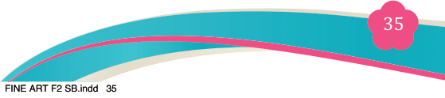
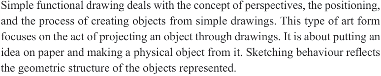

Fine Art for Secondary Schools

35

Student’s Book Form Two


Introduction
Functional art is a type of art that combines both aesthetics and utility. It is both aesthetically pleasing and it serves a practical purpose. In this chapter, you will learn about the concept of simple functional drawing, including its characteristics, types of drawings and materials. You will as well learn about the significance of simple functional drawing and procedures related to creating simple functional drawings. Additionally you will learn about the principles of functional drawing, categories of perspective, types of linear perspective, elements of atmospheric perspective, and the principles of perspective. Revision exercises will be provided to enhance understanding.
The competences developed from this chapter will enable you to draw various simple functional drawings, which is a way to gain income.
Think
The effect of simple functional drawing images.
Concept of simple functional drawing
Simple functional drawing deals with the concept of perspectives, the positioning,
and the process of creating objects from simple drawings. This type of art form focuses on the act of projecting an object through drawings. It is about putting an idea on paper and making a physical object from it. Sketching behaviour reflects the geometric structure of the objects represented.
Drawing occurs in a primarily part-by-part manner, whereby the component
structures of objects appear to dominate the organisation of the ongoing activity.
Simple functional drawing is an important element of visual reasoning and sketch
production in design-related tasks. What makes drawing to be functional is that it
is not created for decoration alone but it is made to serve a particular purpose in daily life. Figure 3.1 shows an example of the functional drawing of a cup.
There are many different ways and methodologies for designers to start a creative
process. Drawings and sketches are the most common ways to visualize an idea.
Chapter
Three
Simple functional drawing
04/08/2025 13:54